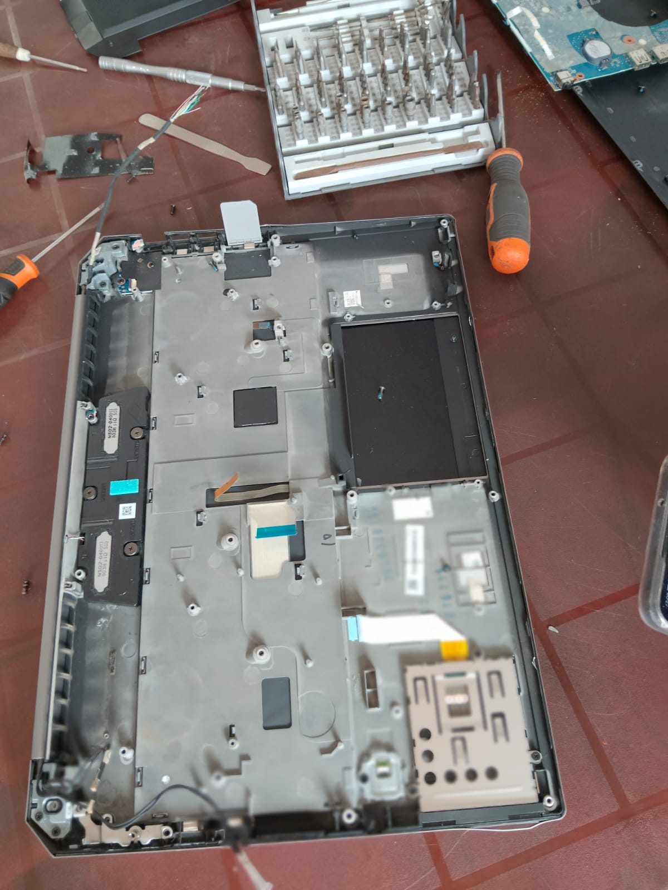
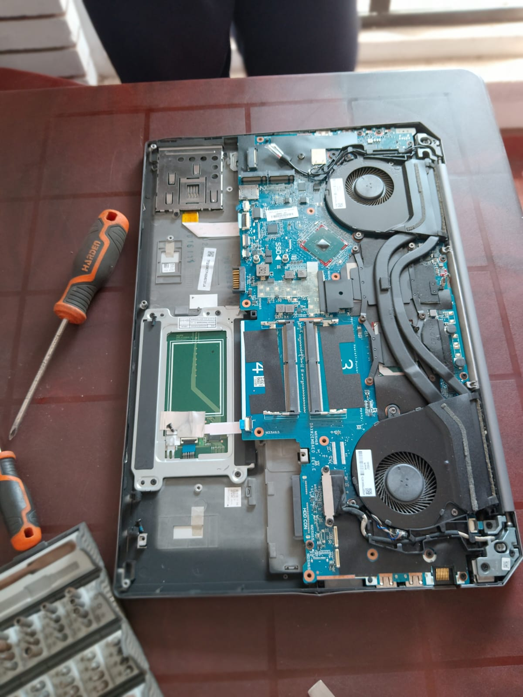

Security Data Destruction



E-Waste is a fast-growing waste stream in the world today. CWM has analyzed the importance of “Data Security” in a digitalized economy where e-commerce strategies, social media and handheld devices are in operation. CWM ensures the prevention of “Data Leakage” which might cause a huge financial reputation loss for a business organization or individual. CWM has designed a novel data destruction methodology that “Melt data at 1300 Celsius degrees” temperature inside an industrial furnace & align with circular economy by extracting precious metal by.
With data comes great responsibility. Protecting information in electronic devices even after their destruction is vital for privacy concerns and security reasons.
CWM provides security data destruction & data smelting service at 1300 Celsius degrees temperature. This type of data destruction & smelting service completely wipes out all data in electronic devices, in an irreversible way.
Data destruction is provides for the following:
CWM ensures data destruction & data smelting services meet all of the required standards. We ensure that all of the data in the electronic device is destructed in a form that is unrecognizable and cannot be decoded.